Thirteen maps, 1804–1876
The printed maps Baltimore made of itself across this period, each linked to its full-resolution original.
Thirteen printed maps of Baltimore, 1804 to 1876, shown small below and linked out to the full-resolution original held by the Library of Congress or Digital Maryland. None of them is the base layer this project's residents are placed against, which is a circa-1930 street survey, chosen because it still carries the alleys most of this population lived on. These are here because a map of dots is easier to read once you have seen the city the dots sit on.
Maps marked 1819–1868 fall inside the span this site's directories cover. The rest are shown for context: one map from before Jackson's 1819 directory, and two from after the last directory, 1868, used here.
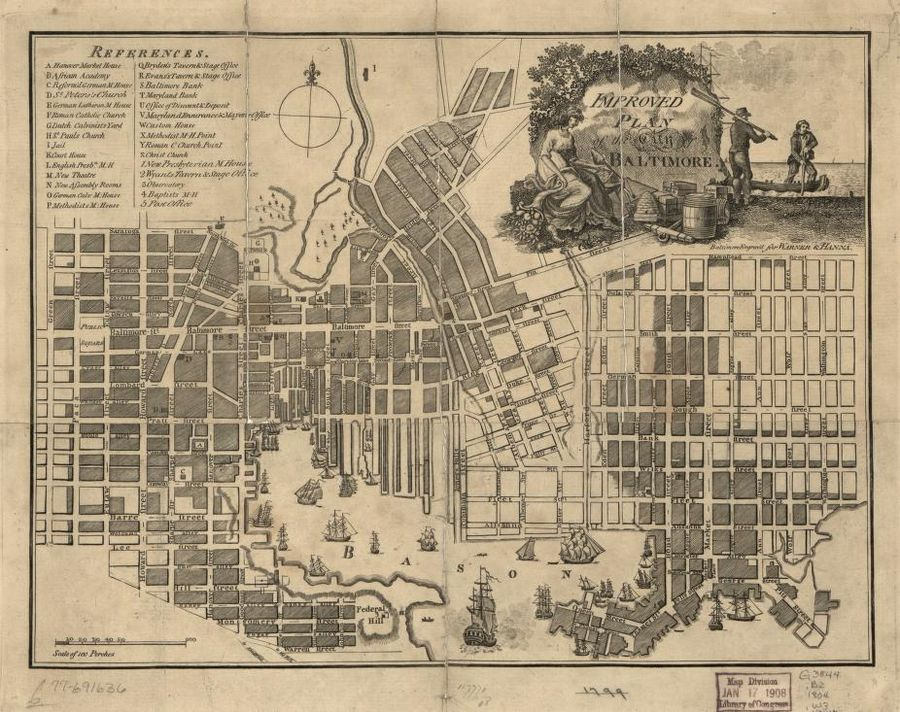
outside the project windowA pictorial plan bound into James Robinson's 1804 Baltimore directory, fifteen years before Jackson's directory gives us our first mapped year. Included for the shape of the city just before this project's period begins, not as a source for anyone on these maps.
View at Library of Congress · JP2, 3,703 × 2,932 px
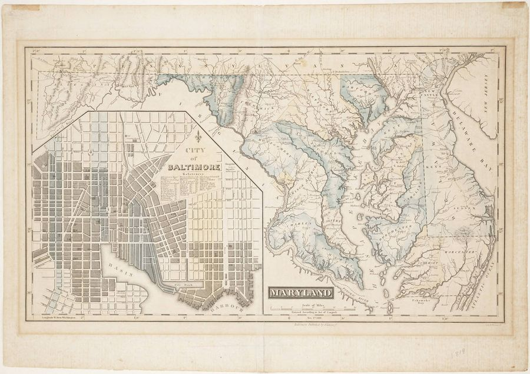
1819–1868The same year as Jackson's directory, the earliest year mapped on this site. The Baltimore inset is small, a shaded patch showing how much of the city was actually built up, with the Washington Monument marked half-finished at the edge of Howard's woods.
Download full resolution · 5,000 × 4,009 px, 600dpi
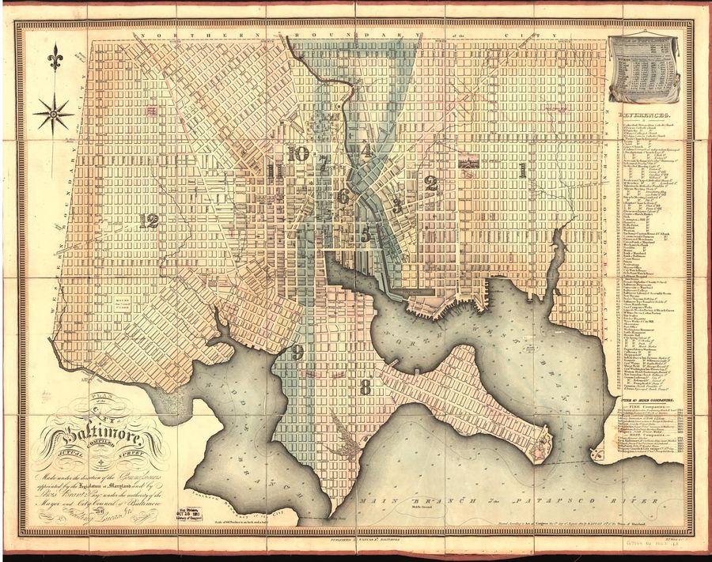
1819–1868The official city plat, the survey Baltimore was actually laid out from, and contemporary with our 1819 and 1822 cohorts. Poppleton was commissioned to survey and fix the city's streets in 1818, and this plan is the printed result of that survey rather than a later redrawing of it.
View at Library of Congress · JP2, 6,975 × 5,506 px
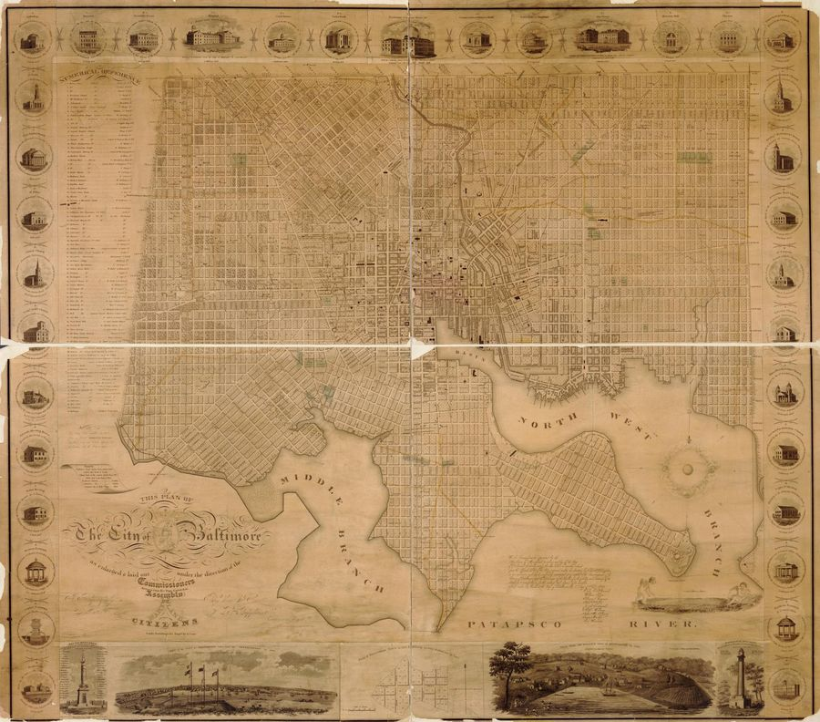
1819–1868A hand colored, much larger edition of the same survey, printed one year after the 1822 plat above and adding an inset of the original 1729 town, sixty acres, drawn to scale inside the 1823 city that had grown up around it.
View at Library of Congress · JP2, 15,196 × 13,376 px
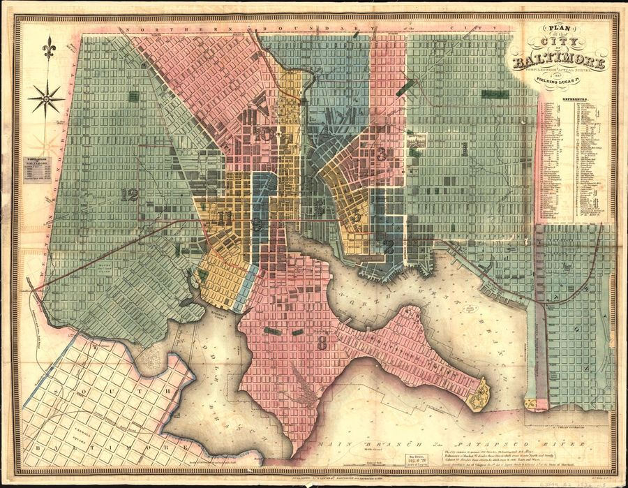
1819–1868Fourteen years after Poppleton's plat, with wards drawn and a population table added. Sits in the gap between our 1822 and 1842 directory cohorts, where the site has no map of its own to show.
View at Library of Congress · JP2, 6,923 × 5,374 px
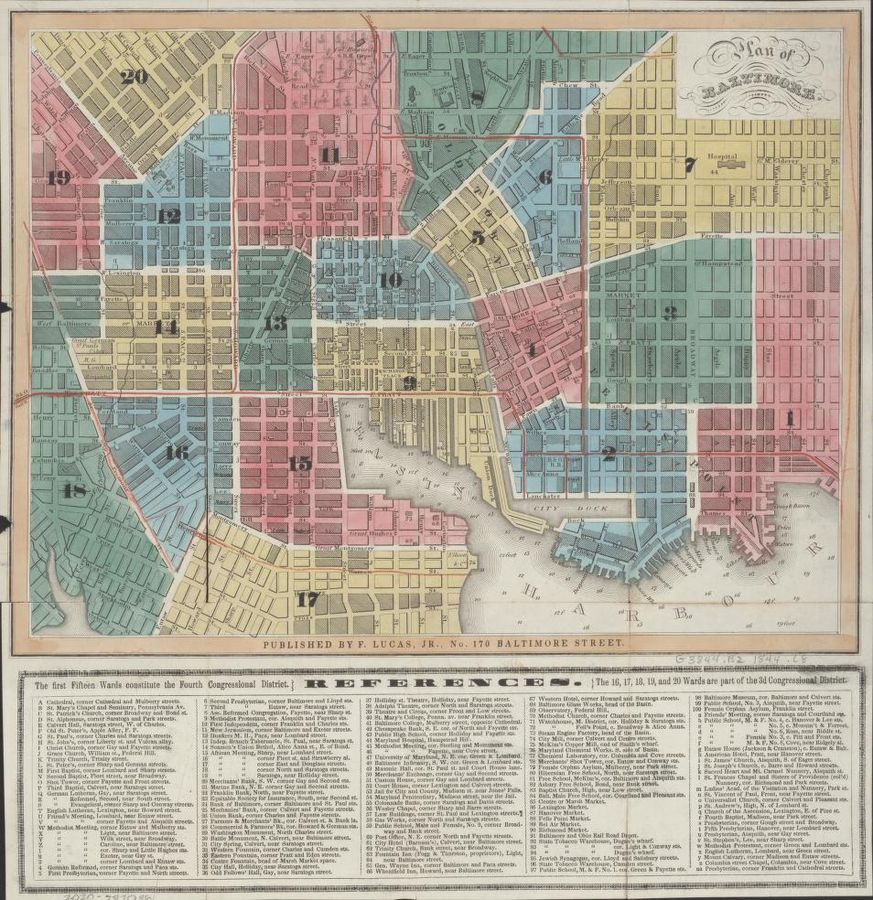
1819–1868One year before our 1845 cohort, the first year on this site with house numbers. This plan shows the wards and the young rail lines the numbered addresses of 1845 sit alongside.
View at Library of Congress · JP2, 3,816 × 3,936 px
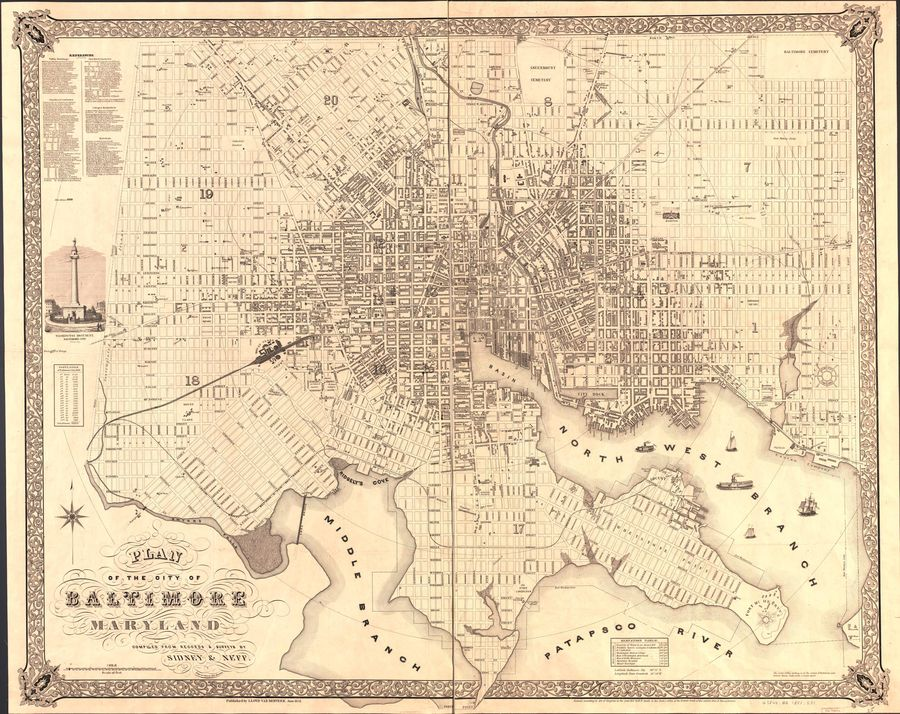
1819–1868Names every street, draws building footprints, and prints the ward numbers directly on the map, which is why it is a candidate for checking our ward polygons against a period source rather than a modern reconstruction. Its own population table does not reconcile with the census: the printed total, 169,303, does not equal the sum of its own twenty rows, 169,032. The census is the better authority on numbers.
View at Library of Congress · JP2, 13,414 × 10,643 px
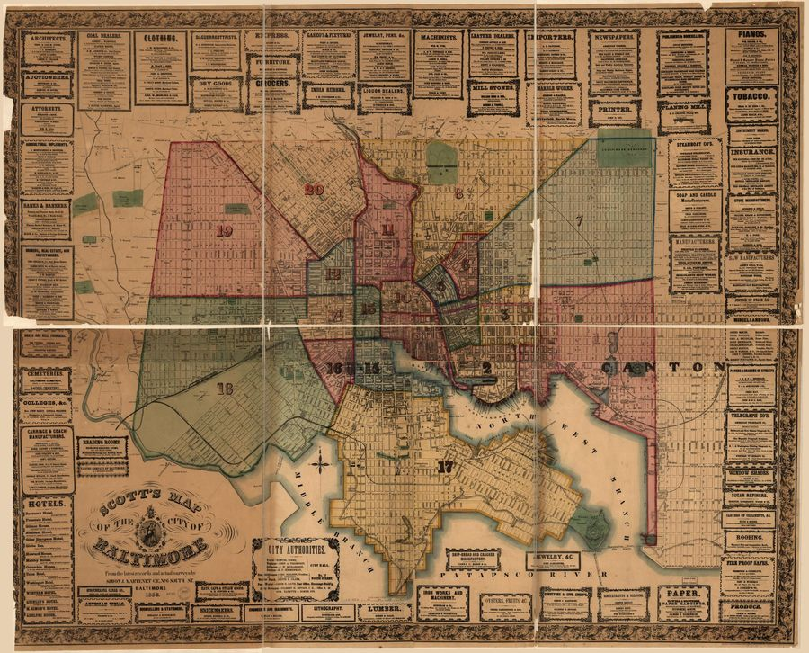
1819–1868Wards and landowners, five years before Wood's 1860 directory. Printed as two large sheets, so this thumbnail is a small fraction of what the original carries.
View at Library of Congress · JP2, 18,170 × 14,666 px
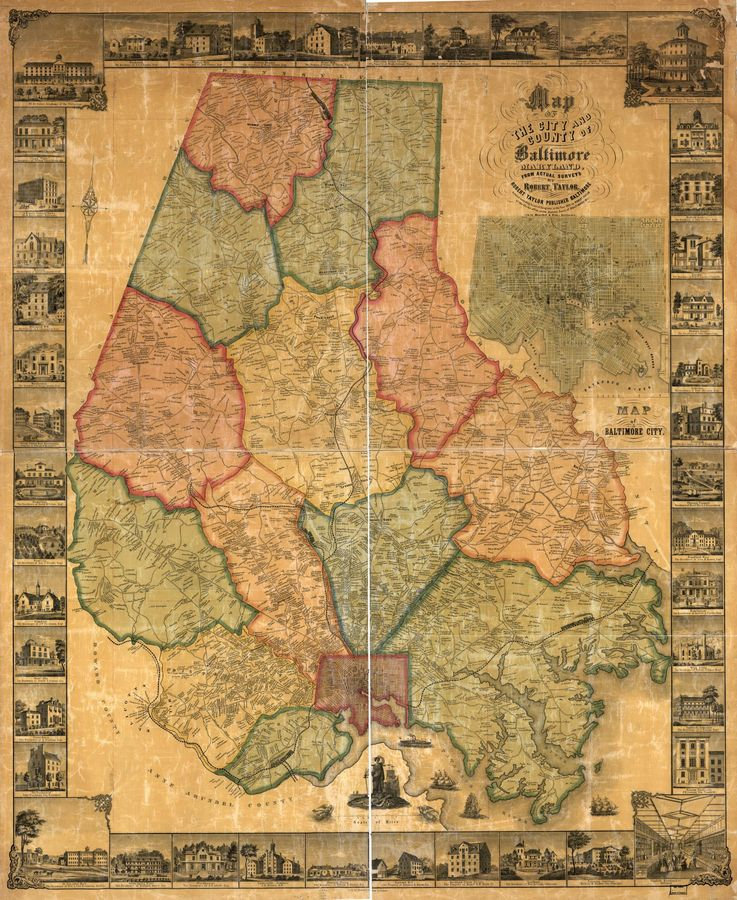
1819–1868A land ownership map reaching past the city line into the surrounding county, naming landowners rather than street residents. Useful for what lay just outside the ward boundaries this site maps.
View at Library of Congress · JP2, 15,804 × 19,291 px
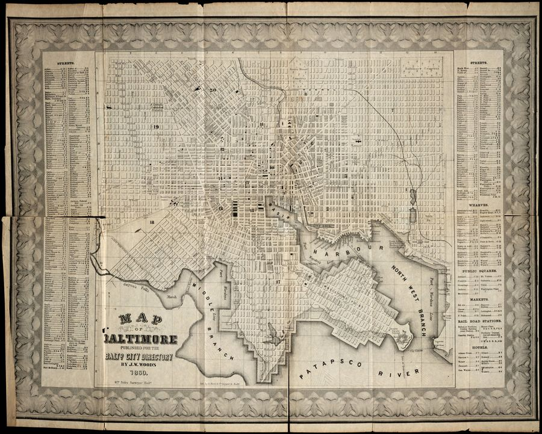
1819–1868The exact companion to our strongest year: bound into the same volume the residents on the 1860 page were parsed from, published by the same John W. Woods. Its margins list street names and prominent businesses alongside the directory page numbers where they appear, a built-in index between the map and the book.
Download full resolution · 5,000 × 4,009 px, 600dpi
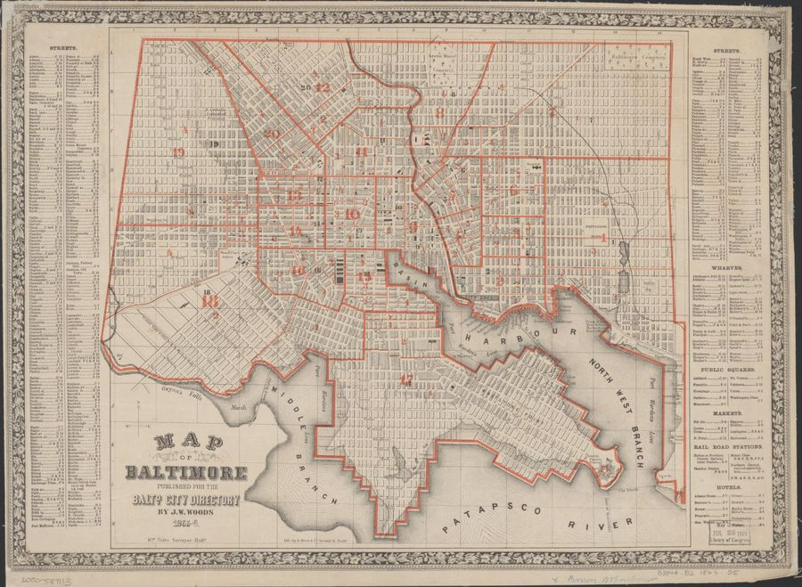
1819–1868The same surveyor and publisher as the 1860 directory map above, six years later and after Baltimore redrew its wards in 1861. Our 1868 page is geocoded against that later ward boundary, so this is the map that shows it.
View at Library of Congress · JP2, 6,073 × 4,450 px
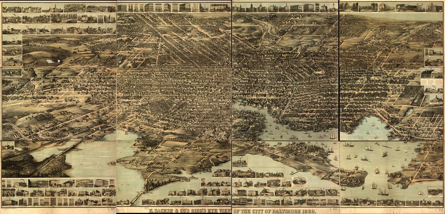
outside the project windowNot measurable, drawn in perspective rather than to scale, one year after the last directory on this site. It shows the city the way a person standing above it would see it, which no plan or plat in this gallery does. The master JP2 is enormous, so only a downsized thumbnail is used here.
View at Library of Congress · JP2, 39,440 × 19,008 px, not downloaded here
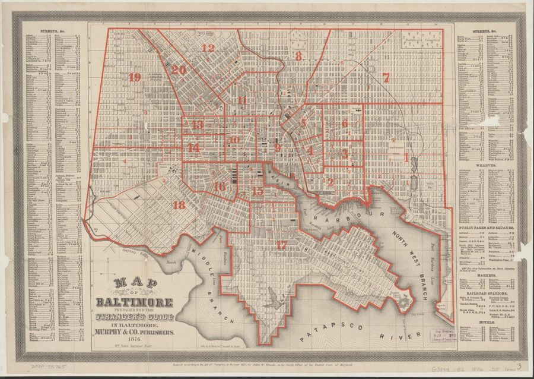
outside the project windowThe same survey team as the 1860 and 1866 maps, eight years after the last directory this site draws on. Shown to mark how far past this project's period the same mapmakers kept working, not as a source for anyone on the site.
View at Library of Congress · JP2, 6,477 × 4,592 px